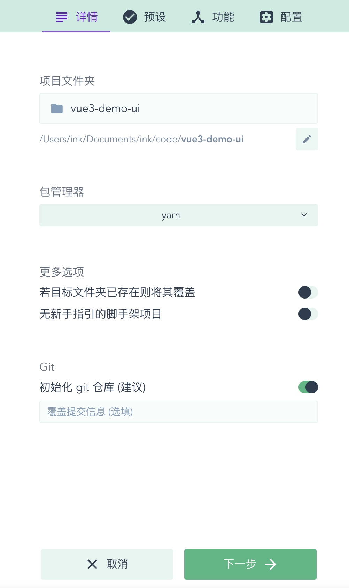
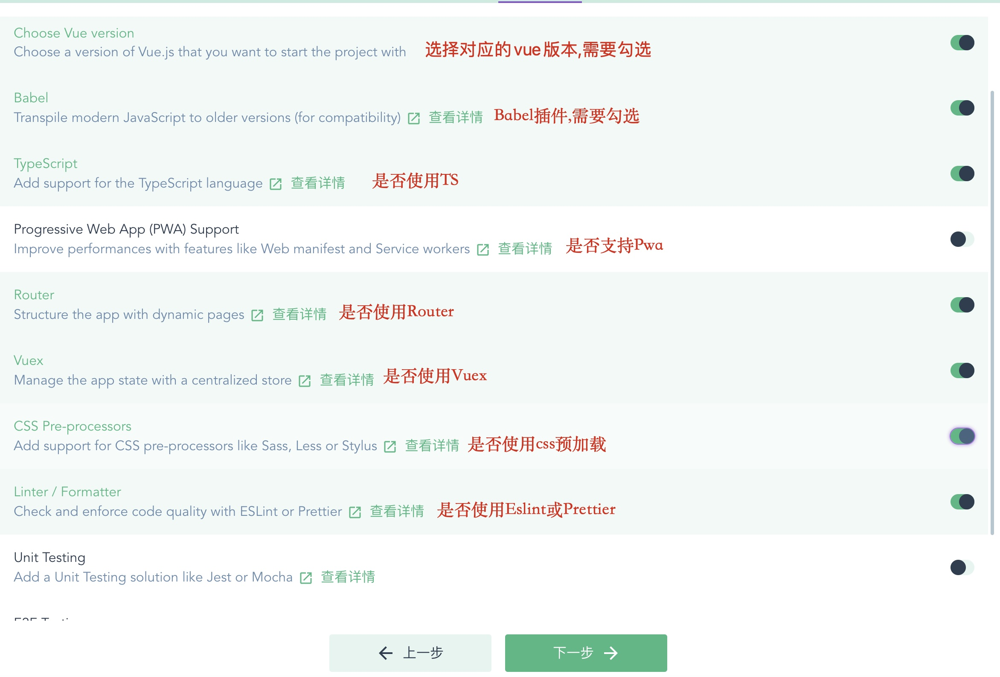
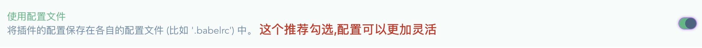
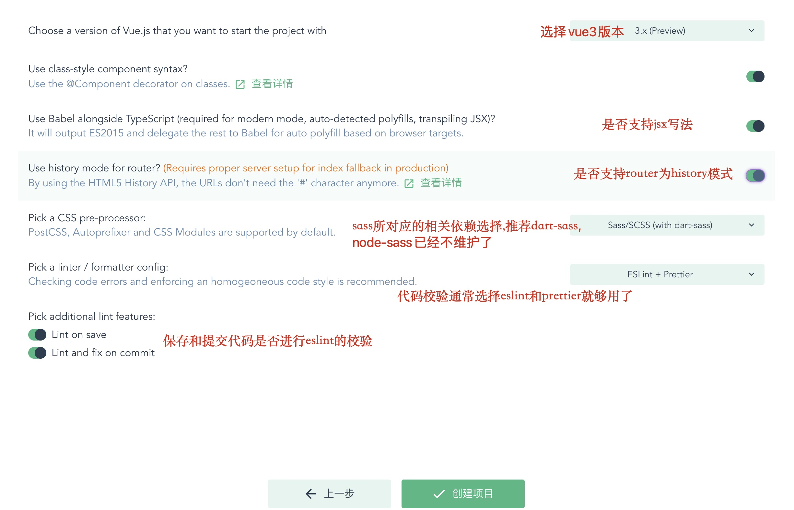
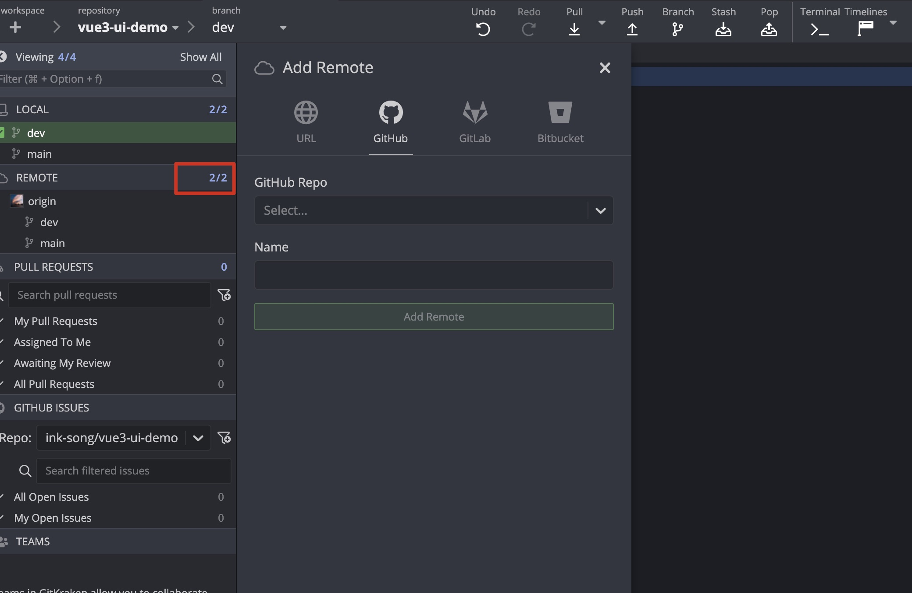
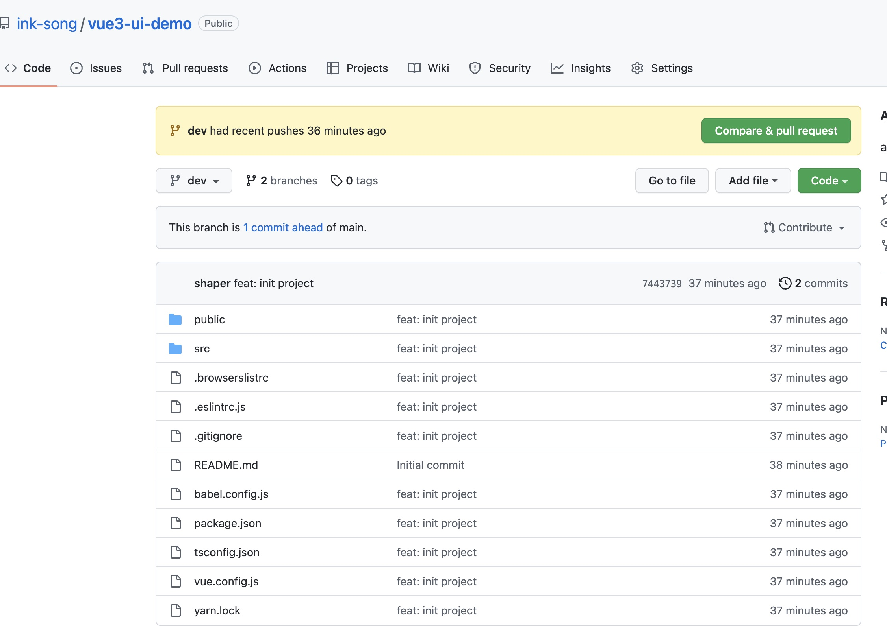
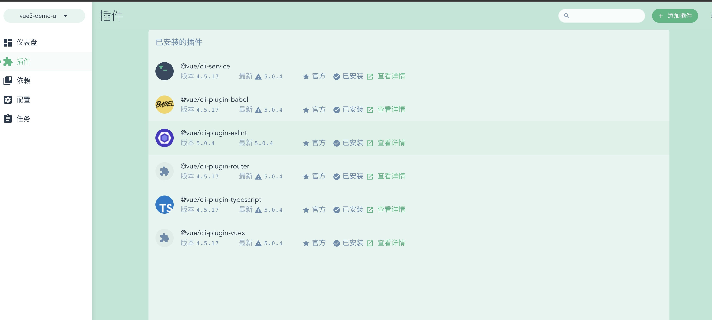
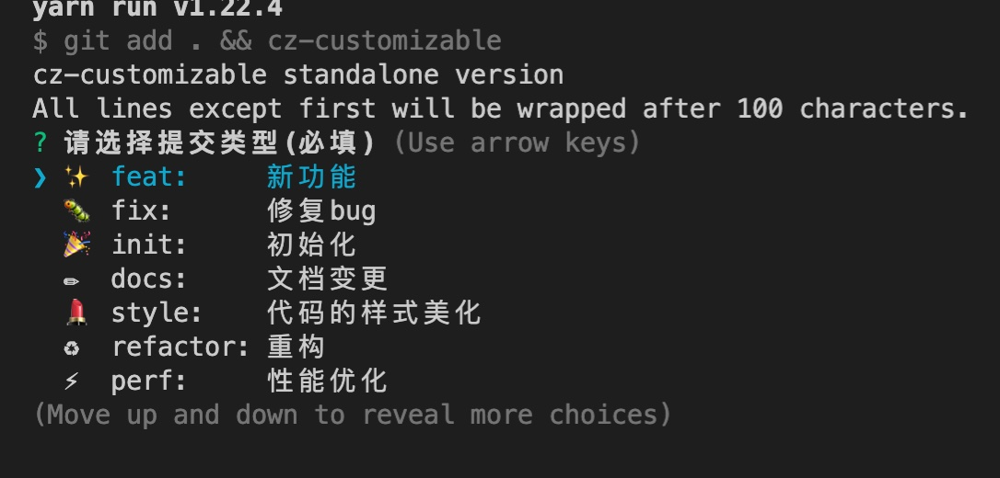

Vue3 + TypeScript Cli 模板
手把手从 0 到 1 构建一个 Vue3 的模板
1.创建基础项目及配置§
-
- 创建项目
vue ui

-
- 功能相关
 
-
- 配置相关

2. 代码管理§
-
- 初始化本地仓库
可以下载 Gitkraken,init 找到本地仓库,进行 git 初始化
-
- 上传远程 点击 Remote 右侧的+号,上传到远程 github
 
现在最基础的 v-cli 模板就在你的 github 上啦!
3.添加相关插件和配置§
初始依赖§

代码规范相关§
1. 代码格式规范(eslint + prettier)§
- 当我们使用v-cli模板时,选择了eslint+ prettier的模式,所以在eslintrc.js中会扩展以下几种依赖
extends: [
'plugin:vue/vue3-essential',
'eslint:recommended',
'@vue/typescript/recommended',
'@vue/prettier/@typescript-eslint',
'@vue/prettier',
],
- 之后创建 .prettierrc.js
module.exports = {
printWidth: 80, //单行长度
tabWidth: 2, //缩进长度
useTabs: false, //使用空格代替tab缩进
semi: false, //句末使用分号
singleQuote: true, //使用单引号
quoteProps: 'as-needed', //仅在必需时为对象的key添加引号
jsxSingleQuote: true, // jsx中使用单引号
trailingComma: 'all', //多行时尽可能打印尾随逗号
bracketSpacing: true, //在对象前后添加空格-eg: { foo: bar }
jsxBracketSameLine: true, //多属性html标签的‘>’折行放置
arrowParens: 'always', //单参数箭头函数参数周围使用圆括号-eg: (x) => x
requirePragma: false, //无需顶部注释即可格式化
insertPragma: false, //在已被preitter格式化的文件顶部加上标注
proseWrap: 'preserve', //不知道怎么翻译
htmlWhitespaceSensitivity: 'ignore', //对HTML全局空白不敏感
vueIndentScriptAndStyle: false, //不对vue中的script及style标签缩进
endOfLine: 'lf', //结束行形式
embeddedLanguageFormatting: 'auto', //对引用代码进行格式化
}
- 创建.prettierignore
# Ignore artifacts:
build
coverage
# Ignore all HTML files:
*.html
- 这时候一般来说会出现eslint和prettier的冲突,所以我们需要安装插件
yarn add -D eslint-config-prettier
然后在.eslintrc.js的extends中添加
'plugin:prettier/recommended',
- 格式化文档
- 格式化所有文档: yarn prettier --write .
- 格式化指定文档: yarn prettier --write index.js
- 检查是否格式化文档: yarn prettier --check .
2. 代码提交规范(cz-customizable+commitlint+husky+conventional-changelog)§
-
书写commit
-
cz-customizable(可自定义的 Commitizen 插件,可帮助实现一致的提交消息)
-
安装
yarn add cz-customizable -D -
配置
-
在根目录下配置.cz-config.js
-
添加代码
module.exports = { types: [ { value: ':sparkles: feat', name: '✨ feat: 新功能' }, { value: ':bug: fix', name: '🐛 fix: 修复bug' }, { value: ':tada: init', name: '🎉 init: 初始化' }, { value: ':pencil2: docs', name: '✏️ docs: 文档变更' }, { value: ':lipstick: style', name: '💄 style: 代码的样式美化' }, { value: ':recycle: refactor', name: '♻️ refactor: 重构' }, { value: ':zap: perf', name: '⚡️ perf: 性能优化' }, { value: ':white_check_mark: test', name: '✅ test: 测试' }, { value: ':rewind: revert', name: '⏪️ revert: 回退' }, { value: ':package: build', name: '📦️ build: 打包' }, { value: ':rocket: chore', name: '🚀 chore: 构建/工程依赖/工具' }, { value: ':construction_worker: ci', name: '👷 ci: CI related changes' } ], messages: { type: '请选择提交类型(必填)', customScope: '请输入文件修改范围(可选)', subject: '请简要描述提交(必填)', body: '请输入详细描述(可选)', breaking: '列出任何BREAKING CHANGES(可选)', footer: '请输入要关闭的issue(可选)', confirmCommit: '确定提交此说明吗？' }, allowCustomScopes: true, allowBreakingChanges: [':sparkles: feat', ':bug: fix'], subjectLimit: 72 } -
在package.json中添加脚本
"scripts" : { "ct": "git add . && cz-customizable" } -
这时候当你执行yarn run ct时会显示如下图

-
-
-
校验commit
-
commitlint
- 检查 commit 是否符合某种规范的校验工具
- 安装
yarn add @commitlint/cli commitlint-config-git-commit-emoji commitlint-config-cz -D-
配置
- 根目录创建commitlint.config.js
- 添加代码
module.exports = { extends: ['git-commit-emoji', 'cz'] }
-
husky
-
针对 git 流程自动执行 commitlint
-
安装
yarn add husky -D -
配置
npm set-script prepare "husky install" npm run prepare npx husky add .husky/commit-msg 'npx --no-install commitlint --edit "$1"'
-
-
-
生成日志
-
conventional-changelog
- 可以根据项目的 commit 和 metadata 信息自动生成 changelogs 和 release notes 的系列工具
-
安装
- yarn add conventional-changelog-cli conventional-changelog-gitmoji-config -D
-
配置
在package.json中添加次脚本
"scripts" : { ... "changelog": "conventional-changelog -p gitmoji-config -i CHANGELOG.md -s" } -
运行 yarn run changelog
-